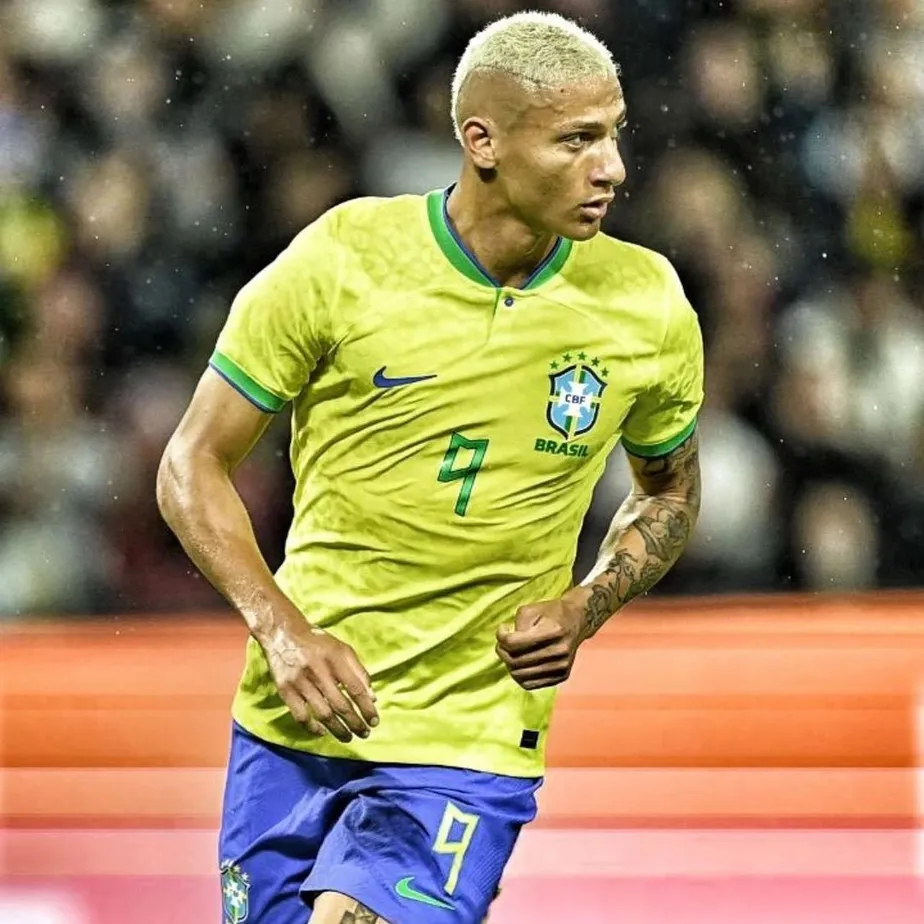

O INESPERADO ACONTECEU: O Pai do Bebe trouxe o hexa ao Brasil!
Por: Vitória Caroline
O pai do Bebe surpreendeu a todos com a sua convocação de última hora que aconteceu por pressão dos fãns do Bebe.
Por ser uma convocação inesperada, existia uma baixa expectativa de desempenho por parte dele,
mas para a surpresa de todos ele arrasou
e trouxe o hexa ao Brasil, deixando todos GAGS!!!